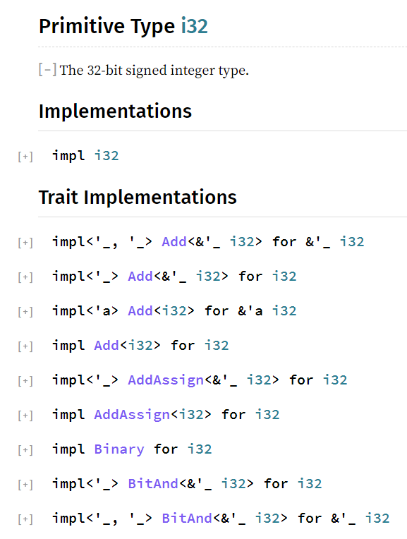

再多理解一點Trait
從前面示例來看，某類型實現某Trait時，需要定義該Trait中指定的所有方法，定義之後，該類型也會擁有這些方法，似乎看上去和直接為各類型定義這些方法沒什麼區別。
但是Trait是對多種類型之間的共性進行的抽象，它只規定實現它的類型要定義哪些方法以及這些方法的簽名，至於方法體的邏輯則不關心。
也可以換個角度來看待Trait。Trait描述了一種通用功能，這種通用功能要求具有某些行為，這種通用功能可以被很多種類型實現，每個實現了這種通用功能的類型，都可以被稱之為是【具有該功能的類型】。
例如，Clone Trait是一種通用功能，描述可克隆的行為，i32類型、i64類型、Vec類型都實現了Clone Trait，那麼就可以說i32類型、i64類型、Vec類型具有Clone的功能，可以調用clone()方法。
甚至，數值類型(包括i32、u32、f32等等)的加減乘除功能，也都是通過實現各種對應的Trait而來的。比如，為了支持加法操作+，這些數值類型都實現了std::ops::Add這個Trait。可以這樣理解，std::ops::Add Trait是一種通用功能，只要某個類型(包括自定義類型)實現了std::ops::Add這個Trait，這個類型的實例對象就可以使用加法操作。同理，對減法、除法、乘法、取模等等操作，也都如此。
一個類型可以實現很多種Trait，使得這個類型具有很多種功能，可以調用這些Trait的方法。比如，原始數據類型、Vec類型、HashMap類型等等已經定義好可直接使用的類型，都已經實現好了各種各樣的Trait(具體實現了哪些Trait需查各自的文檔)，可以調用這些Trait中的方法。
例如，查看i32類型的官方文檔，會發現i32類型實現了非常非常多的Trait，下面截圖是i32類型所實現的一部分Trait。

i32類型的絕大多數功能都來自於其實現的各種Trait，用術語來說，那就是i32類型的大多數功能是組合(composite)其他各種Trait而來的(組合優於繼承的組合)。
因此，Rust是一門支持組合的語言：通過實現Trait而具備相應的功能，是組合而非繼承。
derive Traits
對於Struct類型、Enum類型，需要自己手動去實現各Trait。
但對於一些常見的Trait，可在Struct類型或Enum類型前使用#[derive()]簡單方便地實現這些Trait，Rust會自動為Struct類型和Enum類型定義好這些Trait所要求實現的方法。
例如，為下面的Struct類型、Enum類型實現Copy Trait、Clone Trait。
#![allow(unused)] fn main() { #[derive(Copy, Clone)] struct Person { name: String, age: u8, } #[derive(Copy, Clone)] enum Direction { Up, Down, Left, Right, } }
現在，Person類型和Direction類型就都實現了Copy Trait和Clone Trait，具備了這兩個Trait的功能：所有權轉移時是可拷貝的、可克隆的。
trait作用域
Rust允許在任何時候為任何類型實現任何Trait。例如，在自己的代碼中為標準庫Vec類型實現trait A。
#![allow(unused)] fn main() { // 偽代碼 impl A for Vec { fn ff(&self){...} } }
這使得編程人員可以非常方便地為某類型添加功能，無論這個功能來自自定義的Trait還是Rust中已存在的Trait，也無論這個類型是自定義類型還是Rust內置類型。
這和Ruby的一些功能有些相似，Ruby可以在任意位置處使用include添加代表功能的模塊，可以在任意位置重新打開類、重新打開對象來定義臨時方法。
但對於Rust而言，當類型A實現了Trait T時，想要通過A的實例對象來調用來自於T的方法時，要求Trait T必須在當前作用域內，否則報錯。例如：
#![allow(unused)] fn main() { // Vec類型已經實現了std::io::Write let mut buf: Vec<u8> = vec![]; buf.write_all(b"hello")?; // 報錯：未找到write_all方法 }
上面的代碼報錯是因為Vec雖然實現了Trait Write，但Write並未在作用域內，因此調用來自Write的方法write_all會查找不到該方法。
根據編譯錯誤提示，加上use std::io::Write即可：
#![allow(unused)] fn main() { use std::io::Write; let mut buf: Vec<u8> = vec![]; buf.write_all(b"hello")?; }
為什麼Rust要做如此要求呢？這可以避免衝突。比如張三可以在他的代碼中為u8類型實現Trait A，並定義了實現A所需的方法f，張三導入使用的第三方包中可能也為u8類型實現了Trait A，畢竟Rust允許在任何位置為某類型實現某Trait。因此，張三執行(3_u8).f()的時候，Rust必須要能夠區分調用的這個f方法來自於何處。